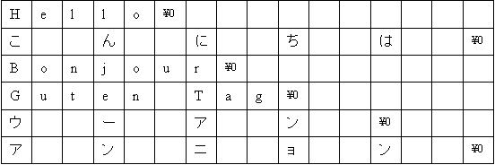

| プログラミングおよび演習 ＮＯ．8 |
| 一次元文字列配列 |
宣言文の中で設定する方法（プログラムの最初に初期値として設定する）
(1)方法１
char a[5]="book"; //文字列データ"book"をa[5]に代入。
a[5]は"book"の文字数+1（=5）の数に合わせています。データ数を指定せずに
char a[]="book";のように書くこともできます。この場合、コンピュータは配列の長さを文字列データ"book"に自動的に合わせてくれます。一方で、
char a[4]="book"; //こう書いてはいけません。のように、実際の文字列データの長さより短い長さで宣言すると間違いです。
(上記のようにしてもエラーメッセージは出ません。しかし、上記のプログラムを走らせると、場合によってコンピュータがフリーズします）
(2)方法2
char a[5]={'b','o','o','k','\0'}; //１文字づつ値を指定している。
最後の\0は文字列の終了コード。'\0'を最後につけないといけない。
実行文の中で設定する方法(プログラムの途中で書き込むことで設定する）
(3)方法3 本文の実行文の中で、次のように１文字づつ代入操作を行う。
a[0]='b'; a[1]='o'; a[2]='o'; a[3]='k'; a[4]='\0';
(4)方法4 次のように文字列コピー関数 strcpy()を用いる。
strcpy(a,"book"); //配列ａに文字列"book"をコピーする。
ただし、(3),(4)の方法を用いる場合は、以下の宣言文が必ず必要です。
char a[5];
注意：実行文の中で、
a="book"; //こう書いてはいけません。
のような文字列の代入演算はできません。必ず、(4)のような方法を用いて下さい。
例8-1（世界のあいさつ１）#include<stdio.h>
int main(void)
{
char USA[]= "Hello";
char Japan[]= "こんにちは";
char France[]= "Bonjour";
char Germany[]= "Guten Tag";
char China[]= "ウーアン";
char Korea[]= "アンニョン";
printf("%s\n",USA);
printf("%s\n",Japan);
printf("%s\n",France);
printf("%s\n",Germany);
printf("%s\n",China);
printf("%s\n",Korea);
return(0);
}
|
| 二次元文字列配列 |

[補足説明] 英数字（ASCII文字）１文字を１Byte(配列要素１個）、日本語全角文字１文字を2Byte（配列要素2個: シフトJIS、JIS、EUCコードの場合）または3Byte（配列要素3個:
UTF-８コードの場合）で扱うことに注意してください。端末室で使用しているEclipse付属のgccコンパイラーは、全角文字をUTF-8コードで扱っています。このため、全角文字１文字を格納するのに、配列要素3個が必要です。すなわち、英数字の場合は、（英数字の文字数＋１)、全角文字の場合は、（全角文字の文字数×3＋１)の要素数の配列を宣言してください。
以上のような考え方にたって、例８－２は二次元の文字列配列を使って書き換えたプログラムです。ここでは、６カ国の国名も表示するようにするために、６カ国のあいさつ文をデータにもつhelloという変数名の二次元配列に加えて、６カ国の国名をデータにもつcountryという変数名の二次元配列を使っています。
例8-2（世界のあいさつ２） (Revised : 2018/10/02)#include<stdio.h>
int main(void)
{
char country[6][8]={"USA", "Japan", "Germany",
"France","China","Korea"};
char hello[6][16]= {"Hello", "こんにちは", "Guten Tag","Bonjour"
,"ウーアン","アンニョン"};
int i;
for(i=0;i<6;i++)
printf("%8s : %16s\n",country[i],hello[i]);
return(0);
} |
| 演習問題 8-1 (Revised : 2014/10/06) 前回例7-3の成績表示プログラムで、 char name[7][7]={"Ito","Kato","Tanaka","Suzuki","Yamada","Takada","Sato"}; char hyodai[5][7]={"NAME","EIGO","SUGAKU","BUTURI","GOKEI"}; のような文字列データを用いることで、各人の名前がついた点数表が表示されるようにプログラムを作りかえてください。 |
| 構 造 体 |
struct 構造体タグ名｛メンバ変数の宣言文の並び}；
構造体タグ名は、｛メンバ変数の宣言｝の中に宣言している複数のメンバ変数を
ひとまとめにした名前を表わします。そして、メンバ変数の宣言文は
のように、複数のメンバ変数の宣言文を列挙します。
成績データの場合、
の4つのメンバ変数を、一つにまとめて表わすための構造体タグ名 slistを次のように宣言します。（型枠宣言は、mainの前のプログラムの先頭（大域変数領域）に置きます）
(2) 構造体変数の宣言
構造体を実際に使いたい所で（例えばmain関数の中）、構造体変数を宣言します（メモリ領域の確保が行われる）。
次のように構造体変数を、配列で宣言することもできます。
（以下の成績データの場合には、人数分の要素数の構造体配列を宣言します）
成績処理プログラムの場合、slist型の構造体配列変数 seiseki を次のように宣言します。
（この例では、学生の数が7人なので、7個の要素からなる配列変数にしている。）
struct slist seiseki[7]；
通常の変数と同じように、宣言文の所で例えば次のようにして、構造体配列変数 seiseki に初期値を設定することができます。
(3) 構造体メンバの参照（使用）
プログラムの実行文の中で、構造体変数の中の各要素変数を参照する場合、
構造体名.構造体メンバ名
のように、ドットを使って、構造体名を構造体メンバ名で修飾します。
構造体変数が配列の場合には、参照方法は、
構造体配列名［要素番号］.構造体メンバ名
のようになります。さらに、構造体メンバも配列の場合、
構造体配列名［要素番号］.構造体メンバ名[要素番号]
となります。上記の構造体配列seisekiの例では、メンバ変数を次のように参照します。
| 例 8-3 (Revised : 2012/10/01) 次は構造体変数を用いて、例7-3 を書き直した成績データ処理プログラムです。 プログラムリストをとおして構造体変数の使い方を勉強してください。 /* 構造体を使った成績データの並び替え */
#include<stdio.h>
#include<string.h>
struct slist{
int num; /* 番号 */
char name[20]; /* 名前 */
int ten[3]; /* 各科目の点数(3科目） */
int total; /* 合計点 */
};
int main(void){
/*変数宣言と配列の初期値設定*/
int i,j;
int N=7,M=3,K=6; /* N:学生数, M:科目数 K:項目数*/
struct slist seiseki[7] = {{1, "Ito", {65, 55, 80}, 0},
{2, "Kato", {30, 40, 50}, 0},
{3, "Tanaka",{65, 85,100}, 0},
{4, "Suzuki",{85,90, 65}, 0},
{5, "Yamada",{20, 50, 80}, 0},
{6, "Takada",{90, 30, 40}, 0},
{7, "Sato",{50, 70, 55}, 0}};
char hyodai[6][7]={"no.","name","eigo","sugaku","buturi","total"};
|
| 演習問題 8-2 (Revised : 2014/10/06) 例8-3を以下のような動作をするプログラムに変更してください。 レポートには、このプログラムの動作説明等を含む考察を書いてください。 ①画面に、>1:Ito, 2:Kato, 3:Tanaka, 4:Suzuki, 5:Yamada, 6:Takada, 7:Sato >学籍番号を入力してください（1-7)? と表示した後、成績表示したい学生の番号をキーボードから入力すると、該当する学生についてのみ、番号、名前、3科目の素点、および合計点を表示。 ②画面に、>1:EIGO, 2:SUGAKU, 3:BUTURI >科目番号を入力してください（1-3)? と表示した後、成績表示したい科目の番号をキーボードから入力すると、該当する科目についてのみ、平均点、最高点、最低点、標準偏差を表示。 |
| 並び替え（ソーティング） |
のように並んでいたとします。合計点の多い順に
番号 合計のように並べ替えるにはどうしたらよいでしょうか？
ソーティングアルゴリズムには、①選択ソート、②挿入ソート、③バブルソート、④クイックソート、などがあります。①②③の処理回数は、データ個数ｎの二乗に比例するため、データ数が多くなるにつれて処理時間が長くなってしまう欠点があります。ただし、②③の方法には、安定なソート（同順位のデータの順番が、並び替え前の順番と同じになること）を行うことができる長所があります。これに対して、④のクイックソートは安定でない欠点がありますが、処理回数を少なくできる（平均的な回数は、n
logn に比例する） ため実用的によく使われます。ここでは、学習目的のために、アルゴリズムが単純でプログラムが理解しやすい①の選択ソート法を取り上げることにします。
（注： ソーティングのアルゴリズムについて詳しく知りたい人は、
http://ja.wikipedia.org/wiki/Category:%E3%82%BD%E3%83%BC%E3%83%88
などを参考にしてください。）
例えば、ソートしたい数が
のように並んでいるとします。最初の繰り返し処理において、最大値のデータとその番号を調べます。その後、最大値のデータ（260)を１番目のデータと交換して、
（１回目） 260 160 210 240 190 210 180とします。次に、２番目以降のデータに対して、上記の場合と同様に、最大値を見つける処理ならびに、最大値(240)のデータと２番目のデータを交換する作業を行って
（２回目） 260 240 210 160 190 210 180と並べ替えます。以下同様に、以上の処理を、残り２つのデータになるまで繰り返します。その結果、
（３回目） 260 240 210 160 190 210 180例 8-4 (Revised : 2006/10/09)/* 成績データのソーティング*/
#include<stdio.h>
int main(void)
{
/*変数宣言と配列の初期値設定*/
int i,j;
int N=7,jmax,totalmax;
int total[7]={210,160,260,240,190,210,180};
/*並び替え前の合計点の表示 */
printf("--------------------------\n");
printf("原データ\n");
printf("--------------------------\n");
for(i=0;i<N;i++){
printf("%8d\n", total[i]);
}
for(i=0;i<N-1;i++){
totalmax=total[i];
jmax=i;
/* 最大値を求める*/
for(j=i+1; j<N; j++){
if(total[j] > totalmax){
jmax=j;
totalmax=total[j];
}
}
/* 最大値(jmax番目)のデータとi番目のデータを交換*/
total[jmax]=total[i];
total[i]=totalmax;
}
/*並ぎ替え後の合計点の表示 */
printf("--------------------------\n");
printf("並び替えデータ\n");
printf("--------------------------\n");
for(j=0;j<N;j++){
printf("%5d\n", total[j]);
}
return(0);
}
|
| 演習問題 8-3 (Revised : 2014/10/06) 原データを int total[8]={46,52,97,13,46,78,46,108}; としたとき、以下のように小さい順から出力するよう、例8-4のプログラムを改良してください。また、並び替え後の？に入る番号を答えなさい。 -------------------------- 原データ -------------------------- 番号 合計 1 46 2 52 3 97 4 13 5 46 6 78 7 46 8 108 -------------------------- 並び替えデータ -------------------------- 番号 合計 4 13 ? 46 ? 46 ? 46 2 52 6 78 3 97 8 108 |
| 演習問題 8-4 余力がある人へ (Revised : 2014/10/06) 例8-3で練習した構造体変数を用いて、次のような結果を表示するプログラムを作ってください （合計点の高い順にソーティングするプログラム）。 ------------------------------------------------ Original Data ------------------------------------------------ No. Name Eigo Sugaku Buturi Total 1 Ito 65 55 80 200 2 Kato 30 40 50 120 3 Tanaka 65 85 100 250 4 Suzuki 85 90 65 240 5 Yamada 20 50 80 150 6 Takada 90 30 40 160 7 Sato 50 70 55 175 ------------------------------------------------ Sorted Data ------------------------------------------------ No. Name Eigo Sugaku Buturi Total 3 Tanaka 65 85 100 250 4 Suzuki 85 90 65 240 1 Ito 65 55 80 200 7 Sato 50 70 55 175 6 Takada 90 30 40 160 5 Yamada 20 50 80 150 2 Kato 30 40 50 120 |